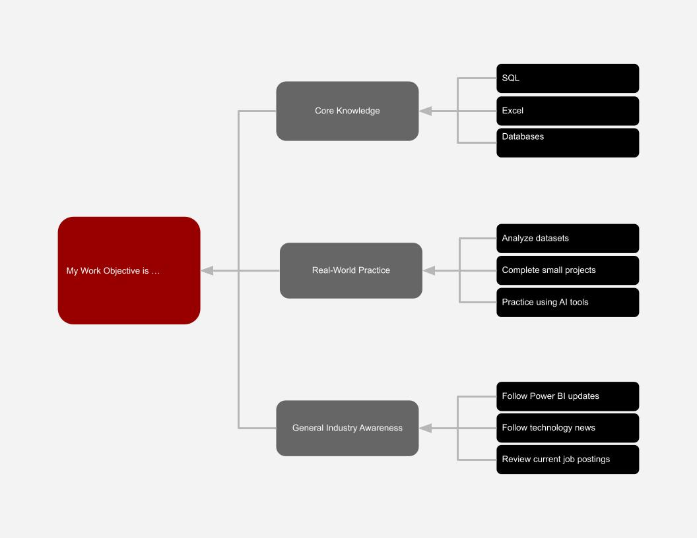

Technology can help people work faster, understand more information, and make better decisions. Since I am interested in careers such as Business Systems Analyst and Data Analyst, I focused on two computing techniques that can improve work in these fields.
AI-assisted data analysis uses artificial intelligence to help people work with large amounts of data faster. Instead of manually searching through every table or writing every formula from scratch, AI tools can help summarize data, find patterns, create reports, and answer questions about information.
One example is Copilot in Power BI. It can help users create reports, analyze information, and work with data using prompts. This can save time on repetitive tasks, but analysts still need to understand the data and check whether the results make sense. This means AI does not completely replace the worker. It can help the worker complete tasks faster and focus more on decision making.
Data visualization turns information into charts, graphs, maps, and dashboards so that people can understand patterns more quickly. This is useful for data analysts and business systems analysts because companies can have large amounts of information that would be difficult to understand by only looking at rows and columns.
Tools such as Power BI can display important business information on one screen. This can help managers quickly notice trends, problems, and changes without searching through several spreadsheets. Analysts still need to choose the right information and visuals so the dashboard clearly explains what is happening.
To prepare for this type of work, I can practice using Power BI, Excel, SQL, and sample datasets. I can also practice using AI tools while learning how to check their results. To stay aware of changes in the field, I can follow technology news, tutorials, company updates, and current job postings.
